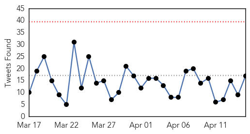
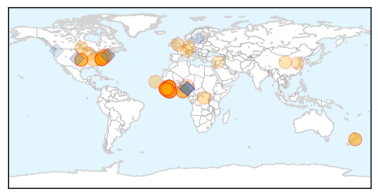
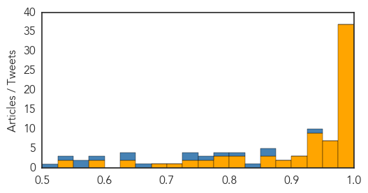

Ebola
30-Day Web Trend
0 alerts, 0 warnings

30-Day Twitter Trend
0 alerts, 0 warnings

Article Locations
Article Confidences
Top Articles:
- 1.000
- Doctor returns home after Ebola battle
- 1.000
- Northland DHB Doctor Returns From Midst of Ebola
- 1.000
- As Ebola Retreats, Obama Urges Vigilance and Preparation in West Africa
- 1.000
- Fresh Ebola scare in Lagos rattles hospital
- 1.000
- Obama says Ebola-fighting goal is to prevent any new cases
- 1.000
- Practice Safe Sex, WHO Warns Ebola Survivours
- 1.000
- Ebola vaccine starts testing in Sierra Leone
- 0.999
- Obama Hosts Heads of Ebola-Stricken Nations as Schools Open
- 0.999
- iafrica.com Ebola virus found in semen 6 months later
- 0.999
- US CDC starts trial of Canadian Ebola vaccine - National
- 0.998
- Schools reopen in Sierra Leone as Ebola threat recedes
- 0.998
- President Obama Meets With West African Leaders To Talk Ebola
- 0.998
- Sierra Leone Schools are Back after Several Months of Ebola Outbreak
- 0.998
- Ebola survivors 'safe sex warning' issued by WHO
- 0.998
- WHO issues 'safe sex warning' to Ebola survivors
- 0.997
- Obama meets African leaders to pledge Ebola fight support
- 0.997
- Obama meets with African leaders to assess progress against Ebola
- 0.996
- Young people played a game-changing role in the battle against Ebola in Liberia
- 0.996
- US CDC starts trial of Canadian Ebola vaccine
- 0.996
- Lessons learned after Ebola
- 0.995
- Obama: 'Major progress' in fight against Ebola
- 0.994
- Obama says Ebola-fighting goal is to prevent any new cases
- 0.994
- Mali: Ebola Preparedness Fund - Emergency Plan of Action (EPOA): Appeal n° MDRML011 - Mali
- 0.994
- US backs plan for Africa’s disease control centre
- 0.993
- Ebola Still a Danger
- 0.993
- Ebola Virus Found in Semen Six Months after Recovery — Naharnet
- 0.992
- Ebola virus found in semen six months after recovery, WHO advocates safe sex 'until further notice'
- 0.991
- Obama: World must remain ‘fully engaged’ against Ebola
- 0.989
- Sierra Leone schools reopen after long closure due to Ebola
- 0.989
- West and Central Africa Region Weekly Humanitarian snapshot 7-13 April 2015 - Central African Republic
- 0.988
- 04 UF researchers inform development of Ebola vaccine trials University of Florida
- 0.985
- CDC: Ebola Vaccine Trial To Begin In Sierra Leone
- 0.984
- UF researchers inform development of Ebola vaccine trials
- 0.983
- No Fresh Case Of Ebola In Lagos – Daily Times Nigerian Newspaper
- 0.981
- Health authorities report 1 confirmed Ebola case in Liberia, previously declared Ebola free
- 0.977
- VP Foh on social mobilization drive in Bo
- 0.977
- Ebola-Hit Sierra Leone Goes Back to School – Daily Times Nigerian Newspaper
- 0.975
- New Jersey spent $2.6 million on Ebola monitoring
- 0.973
- Ebola monitoring costs in New Jersey since October: $2.6M
- 0.971
- Obama pledges continued help in Africa's Ebola fight
- 0.970
- U.S. Agrees to Help Launch 'African CDC'
- 0.966
- VP Foh on social mobilization drive in Bo
- 0.963
- CDC helps African Union launch African CDC
- 0.963
- Sierra Leone schools re-open after Ebola closed for 9 months
- 0.946
- Modern Healthcare Modern Healthcare business news, research, data and events
- 0.946
- With UNMEERs assistance, How Magazine Cut Community is Fending off Ebola
- 0.943
- UN Urges Sierra Leone to Let Pregnant Students Return to School
- 0.943
- UN Urges Sierra Leone to Let Pregnant Students Return to School
- 0.941
- Ebola: Lagos dispels rumours of new cases
- 0.941
- Forklifts to Sierra Leone to tackle Ebola crisis
Showing top 50 articles...
Top Tweets:
- 0.950
- RT: With Ebola subsiding Liberia & Sierra Leone plan to close treatment units. @WHO reports 37 cases in wk to April 12. h…
- 0.867
- Privilege to testify b4 Reps Cole DeLauro & comm on Ebola. Bipartisan support 4 CDC's work protecting Americans & stopping Ebola at source.
- 0.860
- RT: From the Ebola SitRep: Guinea cases up SierraLeone same as last week
- 0.838
- Health Officials: Ebola Monitoring Has Cost New Jersey $2.6 Million - CBS Local http://t.co/L9fc3ZXbz5 ebola EVD
- 0.809
- Rapid RiskAssessment: Outbreak of Ebola virus disease in WestAfrica 14 April 2015 http://t.co/8VuH4C5Qkf
- 0.776
- CDC takes another large step in responding to Ebola. STRIVE Ebola vaccine trial starts in Sierra Leone. http://t.co/RCwlSMdNEx
- 0.759
- RT: @EbolaAlert How can Sierra Leone students catch up after 9 months w/o school b/c of Ebola? Year-long schools possible?
- 0.731
- With Ebola subsiding Liberia & Sierra Leone plan to close treatment units. @WHO reports 37 cases in wk to April 12. http://t.co/RSLgq5uZPc
- 0.727
- As Ebola Retreats Obama Urges Vigilance and Preparation in West Africa - New York Times http://t.co/4Sz7ZCCR1q ebola EVD
- 0.665
- RT: .@HelenBranswell hello. We r not considering the Ebola outbreak over until it is over in all 3 countries. @WHO…
- 0.649
- RT: Schools reopen in Sierra Leone as Ebola outbreak wanes http://t.co/ehhljJYEkt htt…
- 0.628
- .@BarackObama is meeting with presidents of Guinea Liberia and Sierra Leone today to discuss progress against Ebola. Continue the fight!
- 0.594
- Because of the risk of reintroduction from SL or Guinea? I would think Liberia would like to be declared Ebola free non?
- 0.567
- Significant drop of Ebola cases in West Africa but control efforts still needed. @ECDC_EU updated Risk Assessment: http://t.co/j41Kvj2VRJ
- 0.560
- Liberia Audit Report Questions $673000 in Ebola Spending - ABC News http://t.co/81BTKCR88U ebola EVD
- 0.531
- Evaluating ClinicalTrial Designs for Investigational Treatments of Ebola Virus Disease http://t.co/kTJ5tlmEt0
- 0.508
- The Ebola Prediction Score - A new way to predict who needs to be admitted for Ebola and who may not: http://t.co/mcEg5dMYiM
Unknown
30-Day Web Trend
0 alerts, 0 warnings

30-Day Twitter Trend
0 alerts, 0 warnings

Article Locations


Article Confidences

Top Articles:
- 0.957
- Hawthorn Woods' Bark in the Park postponed due to dog flu
- 0.955
- Food poisoning cases in Sultanate at a minimal
- 0.945
- Niger isolates suspected bird flu farm as region takes precautions
- 0.944
- Health Experts Monitor Deadly Tick-Borne Virus
- 0.941
- NCDC to study Goa deaths due to mysterious virus
- 0.930
- What to Know About Antibiotic-Resistant Shigella Superbug
- 0.917
- Chicago Tribune
- 0.917
- Chicago Tribune
- 0.917
- Chicago Tribune
- 0.917
- Chicago Tribune
- 0.917
- Chicago Tribune
- 0.917
- Chicago Tribune
- 0.917
- Chicago Tribune
- 0.917
- Chicago Tribune
- 0.917
- Chicago Tribune
- 0.917
- Chicago Tribune
- 0.917
- Chicago Tribune
- 0.917
- Chicago Tribune
- 0.917
- Chicago Tribune
- 0.917
- Chicago Tribune
- 0.917
- Chicago Tribune
- 0.917
- Chicago Tribune
- 0.917
- Chicago Tribune
- 0.917
- Chicago Tribune
- 0.917
- Chicago Tribune
- 0.910
- The world windows to Thailand
- 0.823
- Medical researcher urges governments to prioritise elephantiasis
- 0.823
- Medical researcher urges government to prioritize elephantiasis
- 0.783
- An unusual version of a gene appears to protect against enteric fever
- 0.775
- Deadly Powassan virus on the rise
- 0.767
- Free flu clinic at the Cherry Auction
- 0.757
- Tuberculosis case at Denver's Metro State not an outbreak concern
- 0.705
- Fatal Brain Disease in US Man Likely Came from UK Beef
- 0.684
- Could a Norovirus Vaccine Become Reality?
- 0.683
- Cruel blow to sanctuary
- 0.681
- Update: Security and Humanitarian Consequences amid Conflict in Yemen - Yemen
- 0.680
- Ending the ‘Neglect’ in Neglected Tropical Diseases
- 0.663
- Hundreds of dogs sickened by flu strain in Midwest
- 0.632
- Telangana government confirms first bird flu outbreak in Thorrur
- 0.629
- Rat lungworm disease spreads fear across Hawaii Island
- 0.601
- Surveys miss majority of poisonings, underestimate cost by billions
- 0.599
- 14-member Sindh team briefed about Punjab health roadmap
- 0.598
- Q&A: What is listeria?
- 0.597
- Kienböck’s disease may progress to fragmentation within 6 months
- 0.589
- Health can tackle (and measure) inequities
- 0.588
- District hospitals given a pass
- 0.583
- What to know about recent recalls and listeria
- 0.580
- Montgomery County, Maryland, Horse Tests Positive for EHV-1
- 0.578
- CBCP exec: Many persons with HIV/AIDS come from broken families
- 0.577
- En Tanzanie, l’opposition rêve d’alternance
Showing top 50 articles...
Top Tweets:
-
No tweets found for Apr 15, 2015